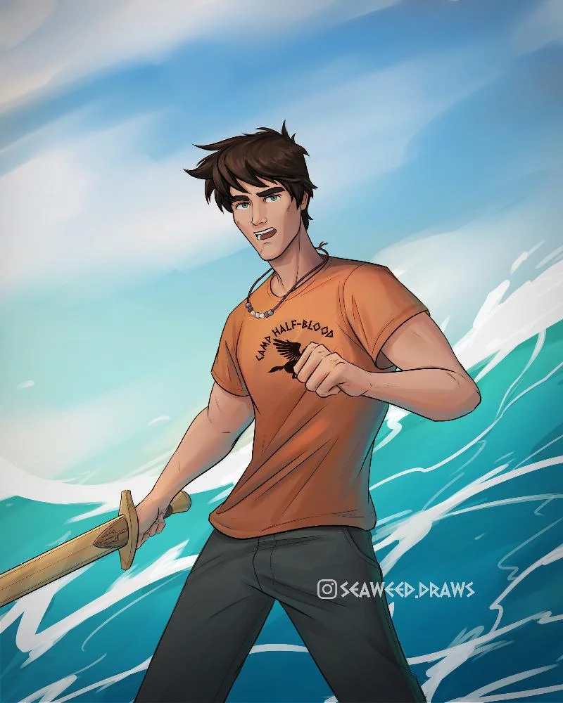

Hola! Me llamo Annabeth Chase y soy una semidiosa! Soy hija de Frederick Chase, quien estudiando historia en Harvard conocio a mi madre, Atenea... Sí, la diosa.
+34 612345561 a.chase@camphalfblood.com
Graduada de Bachiller en el Instituto Meriwether
Naci en San Francisco, California pero actualmente vivo en Long Island, Nueva York. No suelo ver a mi familia porque atraeria monstruos hacia ellos. Por esta misma razon paso los veranos en el Campamento mestizo (Camp Half Blood), donde sólo hay semidioses como yo. Me encanta la arquitectura, en mi tiempo libre leo libros de diseño de edificios y visitando monumentos nacionales.
| NOMBRE | FOTO | DESCRIPCION |
|---|---|---|
| Percy Jackson |  | Hijo de Poseidon |
| Piper Mclean | Hija de Afrodita | |
| Nico di Angelo | Hijo de Hades |